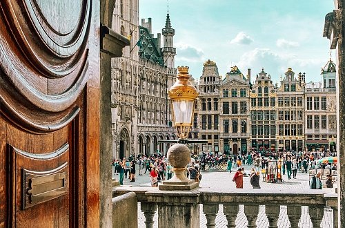
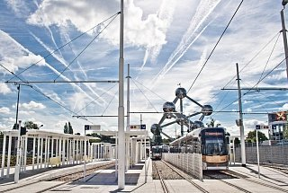
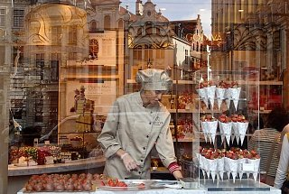

Как ни странно, но на самостоятельные вылазки по знаковым местам Бельгии решается не такое уж большое количество туристов. В основном королевство становится лишь кратковременной остановкой в так называемых обзорных турах по Бенилюксу, куда помимо Бельгии входят еще Люксембург и Нидерланды.
  Отправной точкой большинства путешествий зачастую становится Брюссель. Бельгийская столица невероятно фотогенична и отлично подходит как для охотников за архитектурными реликвиями, так и для тусовщиков, колесящих по Европе в поисках приятного местечка для беззаботного отдыха. Среди прочих городов королевства Брюссель особенно выделяют гурманы, причем почревоугодничать в местных ресторанах любят даже французы, которые в целом довольно иронично настроены по отношению ко всему бельгийскому.